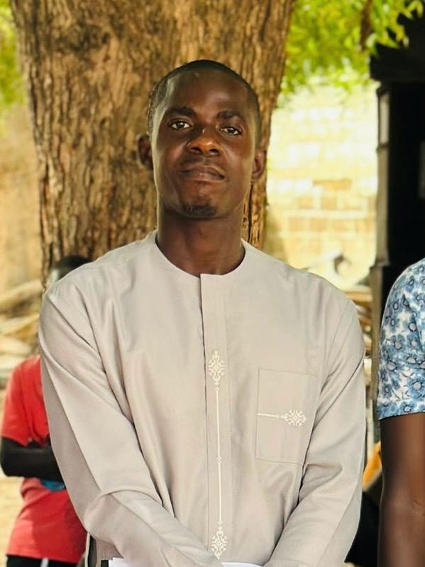
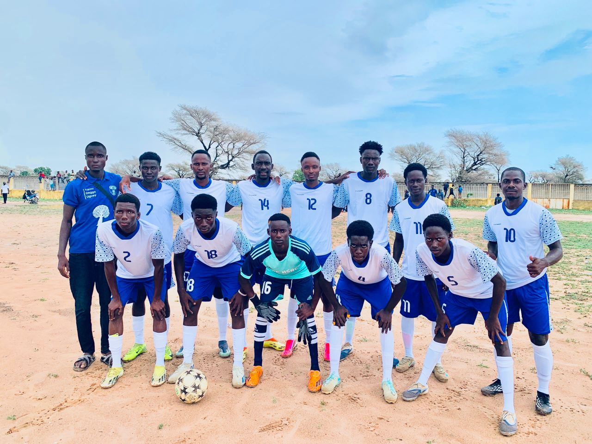
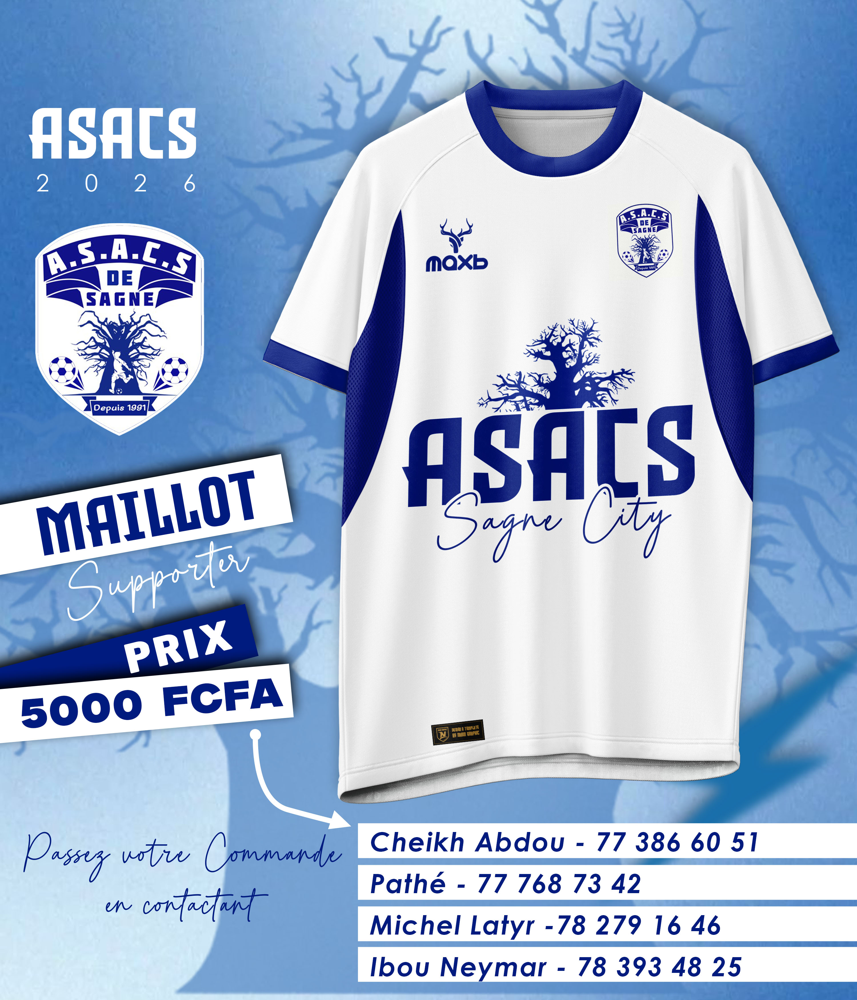
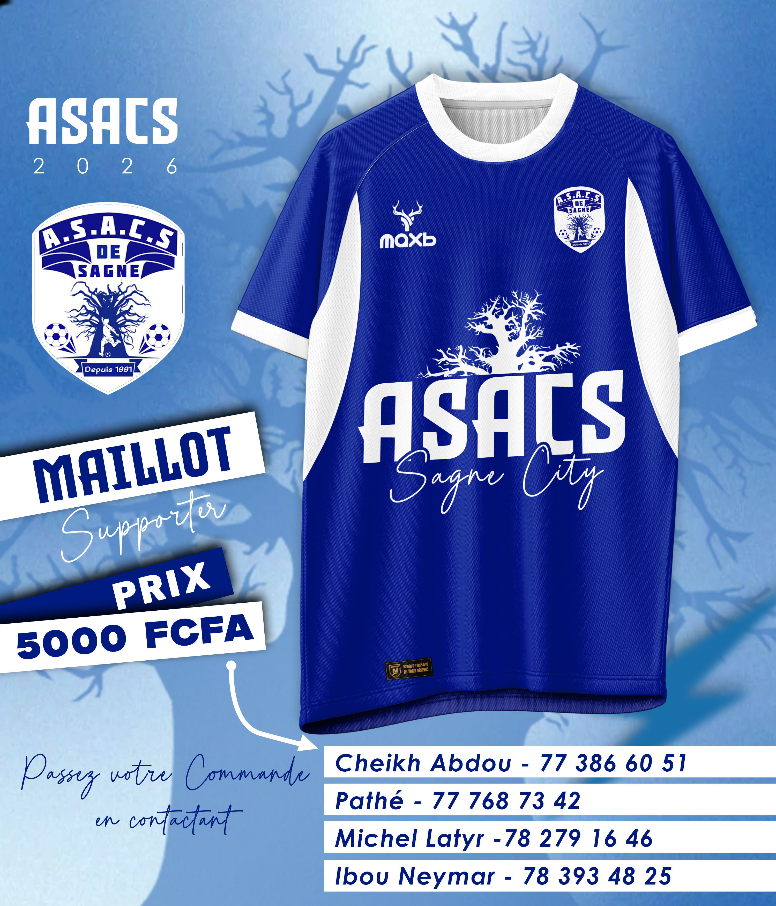

Nos missions
Promouvoir la culture, le sport, la solidarité et l'engagement citoyen au service de la communauté.
Depuis 1988 · Sagne,Niakhar,Fatick,Sénégal
Une association engagée pour la culture, le sport, la solidarité et le développement de notre communauté.
Bienvenue à l'ASACS
L'ASACS mobilise les énergies et les initiatives pour faire vivre Sagne, accompagner sa jeunesse et contribuer au développement local.
Promouvoir la culture, le sport, la solidarité et l'engagement citoyen au service de la communauté.
Favoriser l'épanouissement des jeunes, soutenir les initiatives locales et renforcer la cohésion sociale.
Rassembler les habitants, les membres et les partenaires autour de projets utiles à Sagne.
Notre parcours
ASACS en chiffres et en histoire
La vie de l'association
Retrouvez les annonces, activités, réalisations et temps forts de notre communauté.

Portrait du présidentMot du président
Chers membres, partenaires et amis de Sagne,
L’ASACS poursuit son engagement au service de notre communauté, dans un esprit de solidarité, de responsabilité et de développement collectif.
Ensemble, faisons de notre association un véritable cadre d’action, de solidarité et d’opportunités pour toutes les générations. Continuons à préserver notre héritage, à renforcer nos liens et à œuvrer pour un Sagne meilleur.
Ensemble pour un Sagne meilleur !
Pape Bouré FAYE
Le Président de l'ASACS
Nos ambitions
Des perspectives pour accompagner le développement de Sagne. Cette présentation pourra être complétée selon les décisions de l'association.
Aménager et valoriser le terrain de l'association au bénéfice de la jeunesse et de la pratique sportive.
Promouvoir l'accès aux ressources éducatives, à la lecture et aux outils numériques.
Encourager les compétences, l'entrepreneuriat et les initiatives des femmes et des jeunes.
Création d'une unité de production et de commercialisation de pain.
Aménagement d'un espace sportif moderne pouvant générer des recettes à travers les locations et les compétitions.
Transparence et mémoire
Consultez les documents administratifs et les archives officielles de l'association.
Retrouvez ici les documents administratifs et les archives officielles de l'association.
Fierté villageoise
Un espace dédié aux joueurs, au staff technique et aux performances de l'équipe.

Photo officielle de l'équipe de football de l'ASACSRetrouvez ici les informations sur l'effectif, l'encadrement, les compétitions et les résultats de l'équipe de football.
Images et souvenirs
Les moments forts de l'ASACS en images et en vidéos.
Nos vidéos
Séni FAYE, Chef du village de Sagne :
« L’ASACS est un héritage précieux que nos grands frères nous ont légué et que nous avons,
à notre tour, transmis à nos fils. Cette association a une longue histoire et a beaucoup contribué au développement de notre village.
Aujourd’hui, nous prions pour la réussite des projets qu’elle porte. C’est à la jeune génération de préserver cet héritage, de le pérenniser et de poursuivre le travail déjà accompli,
afin de contribuer au développement de Sagne et de préparer un meilleur avenir aux générations futures. »
Construire ensemble
Nous valorisons les institutions, entreprises et personnes qui accompagnent les initiatives de l'ASACS.
Vous souhaitez soutenir nos actions ou construire un projet avec nous ? Présentez-nous votre structure.
Les couleurs de Sagne
Découvrez les articles aux couleurs de l'association. Les commandes se font directement par WhatsApp.

Photo du maillot
Photo du maillot Photo du bracelet
Photo du braceletQui sommes-nous ?
L'Association de Sagne pour l'Action Culturelle et Sociale (ASACS) a été créée le 16 octobre 1988. Depuis sa création, elle constitue un cadre de mobilisation et d'action au service de la communauté de Sagne.
Contribuer à une communauté solidaire, dynamique et inclusive, où les habitants, particulièrement les jeunes et les femmes, peuvent participer pleinement au développement local.
Culture, sport, éducation, formation, santé, solidarité, autonomisation et initiatives de développement local.
Engagement, solidarité, responsabilité, respect, transmission et esprit communautaire.
Restons en contact
Une question, une proposition, une suggestion ou une envie de collaborer ? Écrivez-nous.
Localisation : Sagne, commune de Niakhar, département de Fatick, Sénégal
E-mail : asacsdesagne@gmail.com